用于 IC 与封装高效热仿真与设计的热阻网络导数（TREND）模型
3-D IC 与封装热设计中，评估模型参数对 hotspot 温度的影响需要大量数值仿真，传统全域求解计算资源与时间成本高。论文提出热阻网络导数（TREND）模型：将结构分解为感兴趣区域 ROI 与固定区域 ROF，对 ROF 用 FVM 离散，通过绝热边界与逐点均匀热流激励、基于叠加原理提取截断面面元间的等效传递热阻矩阵，作为 Robin 等效边界条件施加于 ROI，使线性系统自由度从 N_F+N_I 降为 N_I；模型由 ROF 自身材料、几何与边界唯一决定，与激励无关，因而可复用、可并行构建并保护内部细节。在含 microchannel heat sink 的 3-D IC 案例共 2106 个工况中，预建模型后相比 ANSYS FLUENT 加速 2695x、比标准 FVM 快 382x，2-D 案例最大误差小于 10^-5 ℃，将热设计周期从数周（441 h 40 m 30 s）缩短到 9 m 50 s。
3-D IC 与封装热设计中，常用做法是对大量模型参数组合反复做热仿真以评估其对 hotspot 温度的影响，但传统数值仿真（如商业软件 FLUENT）计算资源消耗大、时间成本高（论文案例中 2106 个工况需数周），而热设计真正关心的通常只是含热源的小区域温度，全域求解造成浪费。已有加速手段存在局限：绝热换热系数类方法仅适用于等温热源块，BCI 紧凑热模型（CTM）不可避免带来精度损失。
提出区域分解策略与 TREND 模型：将整体结构划分为感兴趣区域（ROI）与固定区域（ROF，如冷却系统）；对 ROF 用有限体积法（FVM）空间离散，先在截断面施加绝热边界求得温度 T_ad，再逐个对面元施加均匀热流密度激励获得温度响应，基于叠加原理定义面元间等效传递热阻 R_ij，构成 M×M 热阻矩阵，并以受控电压源类比表示互热效应，形成 TREND 等效边界模型；将该模型作为 Robin 边界条件施加于 ROI 截断面，使求解自由度从 N_F+N_I 降为 N_I。借助稀疏直接求解器（PARDISO-LU）复用 LU 分解加速，多个 ROF 的 TREND 模型可并行建立；模型由 ROF 的材料、边界与几何唯一决定、与激励无关，因而可复用并保护 ROF 内部细节，支持模块化热设计。
2-D 四区域案例：ROI 温度分布与 ANSYS FLUENT 全域结果最大绝对误差小于 10^-5 ℃；更换热源与边界后的第二个 2-D 案例误差同样小于 10^-5 ℃
3-D IC + microchannel heat sink（MCHS）案例共 2106 个仿真工况：预建 TREND 模型后相比 FLUENT 加速 2695x，比自研标准 FVM 求解器快 382x
计入预仿真（TREND 模型建立）时间后，相比 FLUENT 仍加速 1251x，比标准 FVM 快 177x
总 CPU 时间从 441 h 40 m 30 s（FLUENT）降至 9 m 50 s，热设计周期从数周缩短到分钟级
参数影响趋势（论文以图表定性呈现，未给出具体数值）：thermal TSV 有助于降低 hotspot 温度；核心处理器面积增大使 hotspot 温度明显下降；处理器 pitch 过小使 hotspot 温度明显上升
相比绝热换热系数类方法（仅适用于等温热源块，无法处理 IC/封装复杂热仿真）与 BCI 紧凑热模型（需从多组边界条件提取参数、不可避免精度损失），TREND 通过 ROI/ROF 分解与基于叠加原理的等效传递热阻矩阵构造精确等效边界，在不牺牲精度的前提下缩减求解域；且模型由 ROF 自身特性唯一决定、与激励无关，具备可复用性、可并行构建与内部细节保护能力，面向模块化热设计。
相关度级别：low
命中能力域：无明显对应
理由：论文核心贡献是 3-D IC/封装热仿真的数值加速方法（FVM 离散、等效热阻 Robin 边界条件、LU 分解复用），属于封装/热设计领域，与团队 7 个能力域的核心技术均无实质关联：不涉及内存/互连 IP 的架构与微架构定义、RTL 设计与实现、时序/物理 sign-off、UVM/formal 验证、emulation/FPGA 原型或验证自动化。虽然团队 HBM4 产品线涉及 3D 堆叠、TSV 与 microbump 结构、热约束客观存在，论文的模块化可复用热模型与 chiplet 多方集成在概念上有呼应，但热分析通常由封装/后端团队基于商业工具完成，前端架构/RTL/DV 团队不会落地该类数值方法，故判为 low、无明显对应域。
建议动作：仅了解结论
射频异质集成全国重点实验室，上海交通大学（SJTU），中国上海 showbeone@sjtu.edu.cn
上海大学微电子学院，中国上海 lchenshu@shu.edu.cn
在三维集成电路（IC）与封装的热设计中，数值仿真被广泛用于研究模型参数对热点温度的影响。然而，传统仿真方法通常需要大量计算资源，从而导致热设计的时间成本高昂。本文提出了一种新颖的技术，能够高效且精确地对三维集成电路与封装进行热仿真，有望将热设计周期从数周缩短至数分钟。所提出的热阻网络导数（TREND）模型有助于将求解域聚焦于热设计的关键区域，并在不牺牲精度的前提下加速仿真。此外，TREND 模型能够保护芯片与封装的内部细节，非常适合模块化热设计。通过若干数值算例验证了所提方法的灵活性、精度与效率。与商用软件相比，在一个典型的热设计案例中实现了 2695 倍的加速，且未损失精度。
三维集成电路（ICs）与封装的出现，为克服高度集成系统设计中的互连瓶颈提供了一种极具吸引力的解决方案 [1]。然而，多层堆叠结构中的功率密度急剧增加，导致热点温度升高，同时也引发电路功能退化和热应力方面的担忧 [2]。因此，热分析与热管理逐渐成为三维 IC 与封装设计中不可或缺的组成部分，以最大限度地提升性能、可靠性与寿命 [3]。
允许免费制作本作品全部或部分的数字或纸质副本供个人或课堂使用，前提是此类副本不用于牟利或商业目的，且副本在首页带有本声明及完整的引用信息。本作品中归作者以外的他人所有的组件之版权必须得到尊重。允许注明出处的摘录。若以其他方式复制、重新发表、发布到服务器或重新分发至邮件列表，则需事先获得特定许可和/或支付费用。请向 permissions@acm.org 申请许可。
DAC '24，2024 年 6 月 23-27 日，美国加利福尼亚州旧金山
© 2024 版权归所有者/作者（们）所有。出版权授权予 ACM。ACM ISBN 979-8-4007-0601-1/24/06
射频异质集成全国重点实验室，上海交通大学（SJTU），中国上海 tm222@sjtu.edu.cn
射频异质集成全国重点实验室，上海交通大学（SJTU），中国上海 jfmao@sjtu.edu.cn
在三维集成电路（3-D IC）与封装的热设计中，热点温度是评估设计充分性的关键指标。一种常用的最优热设计方法是通过大量的热仿真来研究模型参数对热点温度的影响 [4-6]。然而，仿真产生的海量温度数据对于热设计而言通常并非必要，因为热点温度通常出现在一个包含热源信息的小区域内。这无疑会导致计算资源的大量浪费，并带来高昂的时间成本。
解决该问题的一种可行方法是将固定区域固有的传热特性转换为对热设计至关重要的区域表面上的等效热边界条件。通过这种方式，热仿真可以仅在热设计所关注的域内进行，从而显著减少计算资源的消耗。
文献 [7] 提出了一种新颖的绝热传热系数概念，并将其与典型的传热系数进行了比较。随后，有研究针对绝热传热系数的计算展开 [8], [9]，该方法还可用于解耦对流与传导传热 [10]。此外，它还被进一步应用于描述强制空气对流冷却中凸出加热器之间共轭传热的相互作用 [11-13]。然而，这类方法仅适用于等温加热块的温度预测，无法满足集成电路与封装复杂热仿真的需求。
近年来，边界条件无关（BCI）紧凑热模型（CTM）被提出用于高效热仿真 [14]。通过从一组适当的边界条件中提取参数，并结合多点矩匹配方法 [15-17]，BCI CTM 能够以期望的精度水平逼近电子封装的热行为 [18-20]。然而，这种方法不可避免地会带来一定程度的精度损失。
为克服上述局限性，我们提出了一种基于热阻导数（TREND）模型的集成电路与封装高效热仿真与设计新技术。本工作的主要贡献如下：
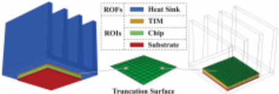
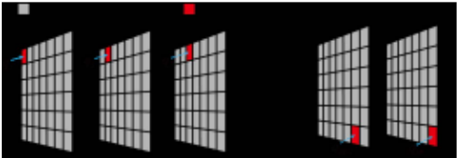
根据三维集成电路（3-D IC）与封装热设计的具体要求，整个结构可以划分为两个部分：感兴趣区域（ROIs）和固定区域（ROFs），如图1所示。ROI通常包含具有高功率密度的关键器件，ROI内的热点温度一般是热设计中最受关注的指标。另一方面，ROF通常由冷却系统构成，该冷却系统在整个热设计过程中保持固定。更具体而言，设置ROI和ROF的指导性策略总结如下。
为了在ROI和ROF的截断面上构建等效热边界条件，我们提出了一种新颖的TREND模型。为简单起见且不失一般性，以一个ROF的稳态传热问题为例来说明主要流程。
首先，采用有限体积法（FVM）对ROF进行空间离散化，从而在截断面上形成如图1所示的正交网格。
然后，通过在截断面上施加绝热边界条件，我们为该ROF建立如下矩阵方程：
其中，𝑨为刚度矩阵，𝒃为右端向量，𝒙为解向量。假设截断面上共有𝑀个面单元，我们求解上述矩阵方程，得到截断面上的温度𝑻 𝑎𝑑，其为一个𝑀 × 1的向量。
接下来，在各面单元上逐一施加均匀热流密度激励。该过程如图2所示。施加在第𝑗个（𝑗 = 1, 2, · · · , 𝑀）面单元上的热流密度大小记为𝑞 𝑗，由此在截断面上产生的温度分布记为𝑻 𝑗。值得注意的是，截断面上的热流密度激励仅影响式(1)中𝒃的取值，而矩阵𝑨保持不变。因此，当采用稀疏线性直接求解器（例如PARDISO-LU [21]）时，可以方便地复用𝑨的LU分解信息来加速热仿真。
在获得𝑻 𝑎𝑑、𝑞 𝑗和𝑻 𝑗之后，我们定义从第𝑗个面单元到截断面上第𝑖个（𝑖 = 1, 2, · · · , 𝑀）面单元的等效传递热阻𝑅 𝑖 𝑗为：
其中，𝑻 𝑗 ( 𝑖 )表示当第𝑗个面单元受到𝑞 𝑗激励时，第𝑖个面单元中心节点处的温度，而𝑻 𝑎𝑑 ( 𝑖 )为第𝑖个面单元中心节点处的绝热温度。基于叠加原理，截断面上温度分布与法向热流分布之间的关系可进一步写成如下矩阵形式：其中，𝑰为一个𝑀 × 𝑀的单位矩阵，𝑫为一个𝑀 × 𝑀的对角矩阵，其描述如下
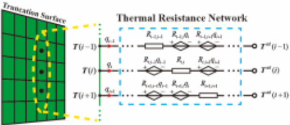
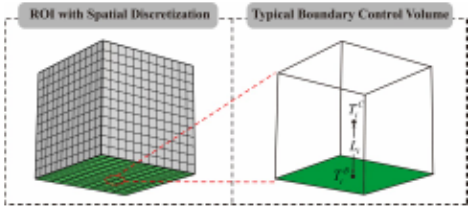
根据式(4)-(6)，我们可以构建𝑻 𝐶与𝒒之间的关系如下，
其中，𝑻 是一个 𝑀 × 1 向量，表示截断表面上所有面单元同时受激励时的温度值；𝑹 是一个 𝑀 × 𝑀 矩阵；𝒒 是一个 𝑀 × 1 向量，表示截断表面上法向热流密度的大小。基于式(3)，我们按照图3所述构建 TREND 模型。温升来自两个方面：自热和互热。自热部分是由局部面单元的激励 𝑞 𝑖 引起的温升 𝑅 𝑖𝑖 × 𝑞 𝑖；互热部分是由其他面单元的激励 𝑞 𝑗 ( 𝑗 ≠ 𝑖 ) 引起的温升 𝑅 𝑖 𝑗 × 𝑞 𝑗 之和。根据热场与电场之间的类比，可以利用电流控制电压源来表示互热效应，如图3所示。
需要注意的是，由于 TREND 模型由 ROF 内部的材料属性、边界条件和几何形状唯一确定，因此它能够表征 ROF 固有的热传递特性，而不依赖于 𝒒 的激励值。此外，如果一个物体由多个相互分离的 ROF 组成，则可以并行建立它们的 TREND 模型，从而提高效率。
在为 ROF 建立 TREND 模型之后，接下来需要利用式 (3) 所描述的等效热边界条件来求解 ROI 的新边值问题。为便于说明，下面研究一个采用正交边界网格的典型示例。
在有限体积法（FVM）中进行空间离散化时，温度节点被设置在控制体的中心。如图 4 所示，𝑇 𝐶 𝑖 表示截断面上与第 𝑖 个面单元相邻的控制体的温度变量。为了计算边界面单元的热流密度，引入截断面上的辅助变量 𝑇 𝐵 𝑖。于是，第 𝑖 个面单元上的法向热流密度 𝑞 𝑖 可由下式计算：
其中，𝜅 𝑖 为截断面上第 𝑖 个面单元的热导率，𝐿 𝑖 为第 𝑖 个面单元中心到相邻控制体中心的距离。
将式 (3) 与式 (4) 联立，可得如下方程，
其中
随后，关系式 (7) 将在后续热仿真中作为 Robin 边界条件处理。假设 ROF 内有 𝑁 𝐹 个控制体，ROI 内有 𝑁 𝐼 个控制体，则整个求解域线性系统的自由度（DoF）为 𝑁 𝐹 + 𝑁 𝐼，而 ROI 线性系统的 DoF 仅为 𝑁 𝐼。因此，所提出的方法能够在不牺牲精度的前提下，通过缩减求解域来加速热仿真。
本文给出若干数值算例，以验证所提出方法的精度与效率，以及灵活的模块化热设计。所有数值算例均在配备两颗 Intel Xeon Platinum 8268 CPU（2.90 GHz/2.89 GHz）和 1.0 TB 内存的服务器上执行。
In the first example, a simple 2-D case consisting of four regions (A, B, C and D) is investigated, as shown in Figure 5. These regions contain different materials, and their respective thermal conductivity is listed in Table 1. Since the material in region C is fluid with velocity, the whole system is associated with the conjugate heat transfer analysis.
The boundary conditions and heat source of the structure are given as follows. In region A, the left edge is set as a constant temperature boundary with 𝑇 𝐴 = 30 ℃. In region B, the upper edge is set as a convection boundary with a convection coefficient ℎ 𝑓 = 0 . 001 W/(mm · K) and an ambient temperature of 𝑇 𝐵 = 25 ℃. In region C, the lower edge is set as a constant temperature boundary with 𝑇 𝐶 = 20 ℃ and the flow velocity 𝑢 is assumed to be parallel to the truncation surface with a magnitude of 0.001 mm/s. All other boundaries are set to be adiabatic. In region D, the heat source density is Q1 = 0.03 W / mm 2 , which is uniformly distributed.
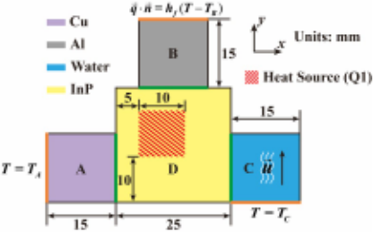
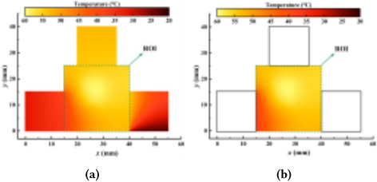
| Material | Thermal Conductivity ( 𝑊 /( 𝑚 · 𝐾 ) ) |
|---|---|
| Copper | 400 |
| Aluminum | 202.4 |
| InP | 68 |
| Silicon | 130 |
| Water | 0.575 |
| Material | Thermal Conductivity ( 𝑊 /( 𝑚 · 𝐾 ) ) |
Assuming that we are only interested in the temperature distribution in the region D for thermal design, we can consider region D as the ROI while treating regions A, B, and C as the ROFs.
For comparison, the steady-state thermal simulation is performed by ANSYS FLUENT [22] and the proposed method, respectively. The temperature distribution of the whole structure by FLUENT is shown in Figure 6(a). With the proposed method, the result in the ROI is illustrated in Figure 6(b). It is evident that the thermal profiles of the ROI are in good agreement with each other. The maximum absolute error is less than 10 - 5 ℃.
Then, in order to verify the reusability of the TREND model, we investigate another 2-D structure, as shown in Figure 7. It also holds four regions, where regions A, B, and C are the same to the previous ones. In region E, the density of heat source is Q2 = 0.05 W / mm 2 , and the upper boundary is imposed with a heat flux density 𝑞 𝐸 = 0.001 W/mm. Note that since the regions A, B, and C remain unchanged, there is no need to reestablish their TREND models. Thus, the internal details of these regions can be successfully protected in the process of thermal design. The simulated results are compared in Figure 8. It is shown that the temperature distributions match remarkably well and the maximum absolute error is less than 10 - 5 ℃.
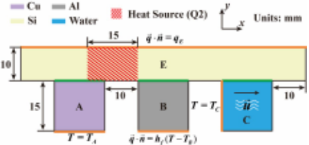
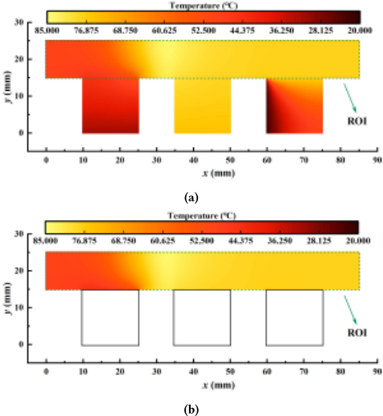
Based on the above analysis, it is evident that we can arbitrarily change the intensity and position of the heat source, material properties, boundary conditions and geometric topology within the ROI as long as these changes do not affect the relative position of the truncation surfaces of the ROFs. Moreover, the reusability of the TREND model allows for flexible modular design with arbitrary combination and arrangement.
To evaluate the accuracy and efficiency of the proposed method for thermal design, a complicated system consisting of 3-D ICs [4]
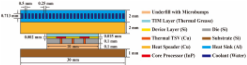
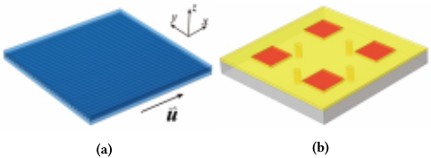
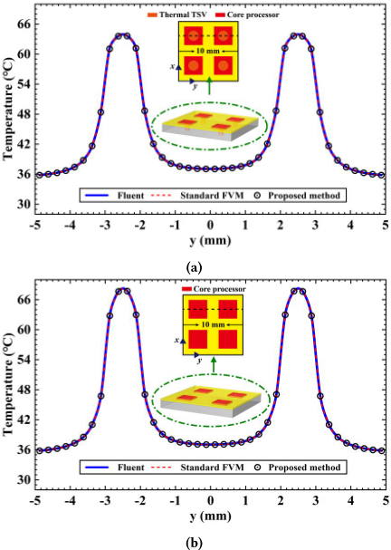
with a microchannel heat sink (MCHS) [23] is considered in this example, as shown in Figure 9. The 3-D display of the MCHS and the nominal arrangement of TSVs is provided in Figure 10.
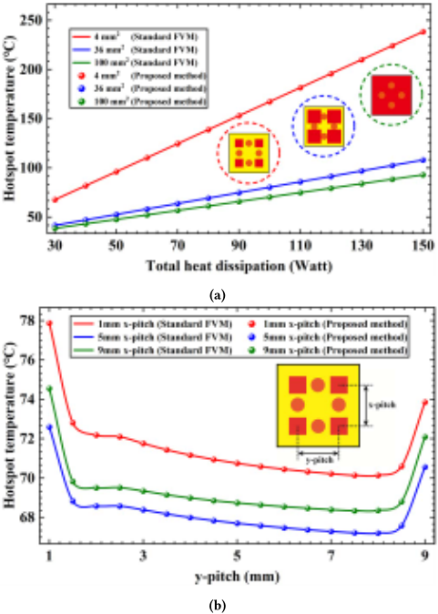
In the thermal analysis of conjugate heat transfer involved in this example, the boundary conditions of the flow field in microchannel are similar to the settings in [1]. At the inlet of the microchannel, the velocity is uniformly normal with a magnitude of 0.1 m/s. The inlet temperature is 25 ℃ and the bottom surface of the substrate is set as a convection boundary with a convection coefficient ℎ = 10 W /( m 2 · K ) and an ambient temperature of 𝑇 𝑎𝑚𝑏 = 25 ℃. The other surfaces are treated as adiabatic. The four core processors are considered with uniform volumetric heat generation rate. Additionally, the thermal conductivity of the thermal grease is 3 W /( m · K ) and the parameters of other materials are listed in Table 1.
Through thermal simulation, we aim to analyze the effects of different model parameters on the hotspot temperature of the whole structure. They include 1) the area of the core processors, 2) the pitch of core processors, 3) the total heat dissipation, and 4) the arrangements of through silicon vias (TSVs). To fulfill the aforementioned requirements, it is necessary to perform thermal simulation for 2106 cases in total.
According to the criteria discussed in Section 2.1, we categorize the device layer and die into the ROI, sort the MCHS, heat spreader and thermal interface material (TIM) layer into the top ROF, and classify the underfill with microbumps and substrate into the bottom ROF.
| Pre-simulation | Simulation | |
|---|---|---|
| FLUENT | None | 441 h 40 m30 s |
| Standard FVM | None | 62 h 37 m29 s |
| Proposed Method | 11 m21 s | 9 m50 s |
| | Pre-simulation | Simulation |
For validation, two representative scenarios from a total of 2106 cases are performed by FLUENT, standard FVM (our in-house solver) and the proposed method respectively. When the total heat dissipation of the core processors is 30 W, the temperature results with core-concentrated TSVs and without TSVs are depicted in Figure 11. It is seen that the thermal TSVs are beneficial to reduce the hotspot temperature. Besides, it is evident that the results of the proposed method, standard FVM, and FLUENT are in very good agreement. Further, Figure 12 depicts the effect of model parameters on the hotspot temperature for the nominal TSV arrangement. In Figure 12(a), we observe that the hotspot temperature markedly decreases as the core processor area increases. From Figure 12(b), an obvious increase of the hotspot temperature is seen when the core processor pitch is too small. Again, the results of the proposed method are consistent with those of the standard FVM.
为了评估所提出方法的效率，我们将 ROF 的 TREND 模型建立过程视为预仿真流程，并对总共 2106 次仿真所耗费的 CPU 时间进行比较，如表 2 所示。值得注意的是，标准 FVM 与所提出的方法均采用我们的自研代码实现，从而确保了相同的矩阵组装方式、相同的稀疏线性求解器等，这使得利用 TREND 模型本身所获得的加速性能得以清晰展示。结果表明，所提出的方法在仿真效率方面实现了显著提升。当 ROF 的 TREND 模型预先建立后，所提出的方法相比 FLUENT 可实现 2695 倍的加速，比标准 FVM 快 382 倍，有望将热设计周期从数周（441 小时 40 分 30 秒）缩短至数分钟（9 分 50 秒）。即使将预仿真时间考虑在内，相比 FLUENT 仍可实现 1251 倍的加速，比标准 FVM 快 177 倍。
本文提出 TREND 模型，用于对三维集成电路（3-D IC）与封装进行高效且精确的热仿真与设计。TREND 模型的诸多优点，例如可复用性以及对芯片与封装内部细节的保护，展现了其在灵活模块化热设计方面的巨大潜力。数值结果表明，在带有微通道热沉（MCHS）的三维集成电路热设计中，所提出的方法相比 FLUENT 实现了 2695 倍的加速，且不损失精度。